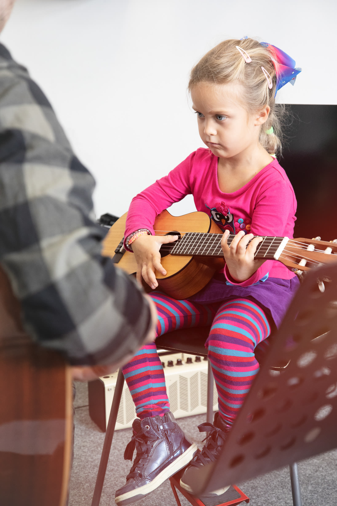
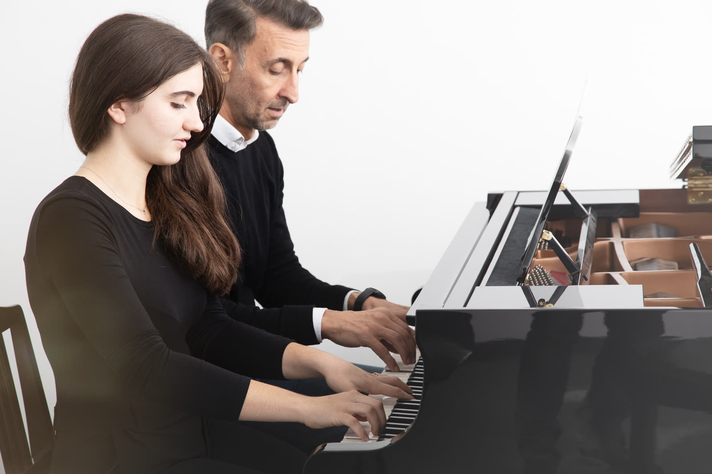
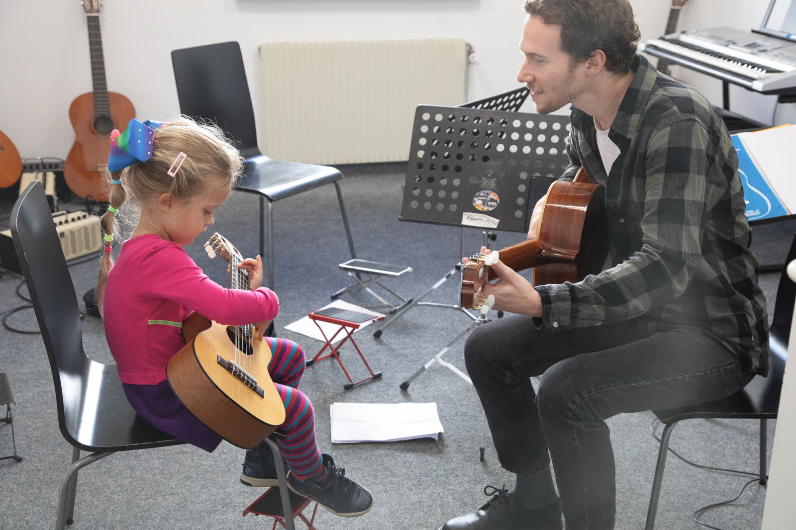
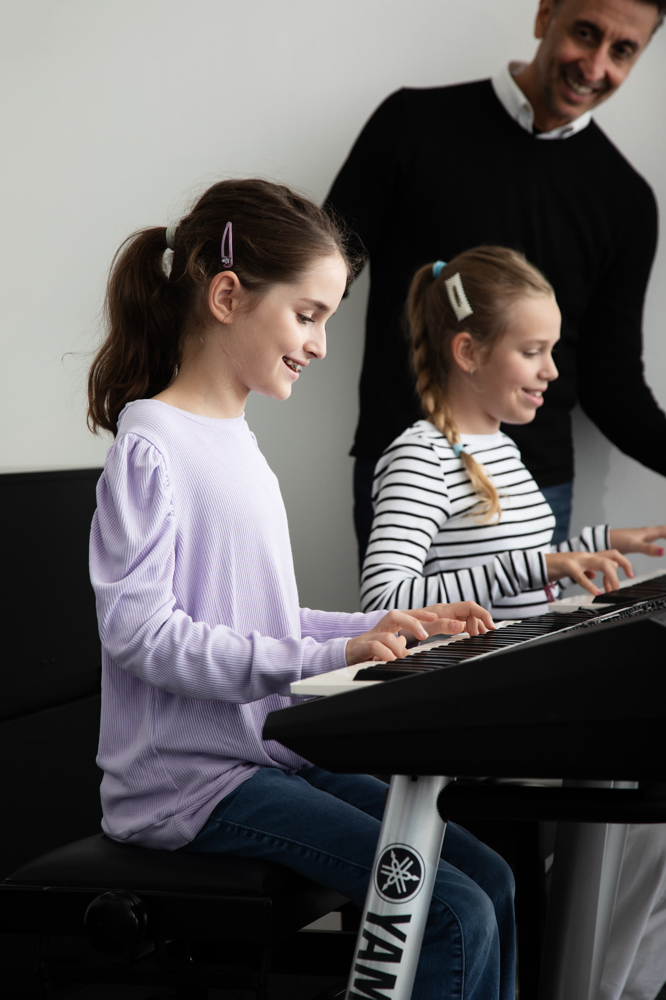
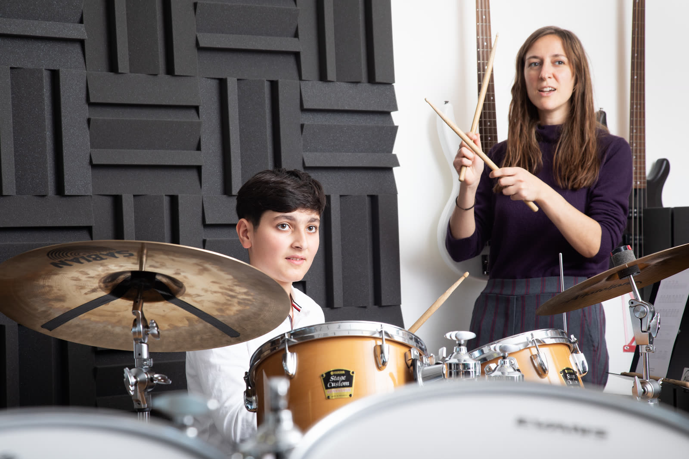

Muzika je igra za sve generacije. Licencirana Yamaha škola u Banja Luci.
Od popularnih kurseva do programa osnovne muzičke škole — Yamaha metoda prati svaki korak. Programi za najmlađe stižu uskoro.
Programi za djecu ispod 8 godina biće uskoro dostupni. Pratite nas za više informacija.

Gitara, klavir, pjevanje, bubnjevi i više — moderni instrumenti na Yamaha metodi.
Saznaj više →
Nastava prema zvaničnom nastavnom planu uz mogućnost polaganja ispita i dobijanja svjedočanstva.
Saznaj više →Časovi u našoj školi — gitara, klavir, bubnjevi i više.



Kontaktirajte nas i upišite se. Upis je moguć u bilo koje vrijeme školske godine.
Upiši se →